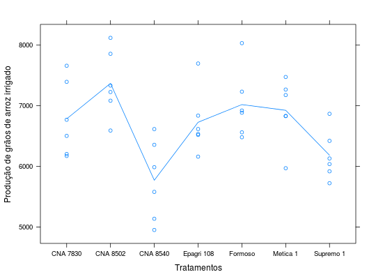

Dados do Ensaio 2 de um experimento em DIC, que estudou a produtividade de grãos de arroz em lavoura conduzida com inundação contínua até a fase de diferenciação do primórdio floral e drenada após esta fase. O experimento teve seis repetições e sete tratamentos.
Um data.frame com 42 observações e 3 variáveis, em que
ZIMMERMANN (2004), Tabela 12.2, pág 249.
library(lattice) data(ZimmermannTb12.2)#> Warning: data set ‘ZimmermannTb12.2’ not foundstr(ZimmermannTb12.2)#> 'data.frame': 42 obs. of 3 variables: #> $ geno: Factor w/ 7 levels "CNA 7830","CNA 8502",..: 1 2 3 4 5 6 7 1 2 3 ... #> $ rept: num 1 1 1 1 1 1 1 2 2 2 ... #> $ prod: num 7660 7084 5988 6520 7233 ...xyplot(prod ~ geno, data = ZimmermannTb12.2, type = c("p", "a"), xlab = "Tratamentos", ylab = "Produção de grãos de arroz irrigado")aggregate(prod ~ geno, data = ZimmermannTb12.2, FUN = function(x) { c(mean = mean(x), var = var(x)) })#> geno prod.mean prod.var #> 1 CNA 7830 6784.500 385570.700 #> 2 CNA 8502 7369.000 301697.600 #> 3 CNA 8540 5772.167 442082.967 #> 4 Epagri 108 6728.167 272850.167 #> 5 Formoso 7019.833 319478.167 #> 6 Metica 1 6925.500 282288.300 #> 7 Supremo 1 6184.167 165904.967